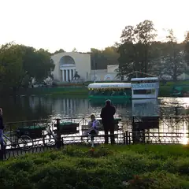
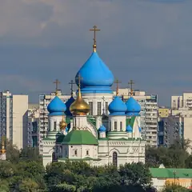

Районы · ЮВАО
Куда сходить на юго-востоке Москвы
39 мест на юго-востоке Москвы: 17 развлечений, 5 компьютерных клубов, 4 ресторана или кафе и 3 места для прогулки. Например, «Парк 850-летия Москвы», «Усадьба Люблино» и «Кузьминки». 21 готовый план начинается здесь. Больше всего мест у станций «Волжская», «Дубровка» и «Кузьминки».
- 39 мест
- 21 план
- 5 клубов
Места 34
ул. Перерва, Марьино
Большой парк на набережной в Марьине: велодорожки, спортплощадки и вид на Москву-реку.
Подробнее и маршрут: Парк 850-летия МосквыПозвать сюда: Парк 850-летия Москвы
Фото: Brateevsky, CC BY-SA 3.0 · Wikimedia Commons
Тихая ул., 23, стр. 1
Дворец-ротонда XIX века у пруда и парк вокруг — тихая загородная атмосфера в городе.
Подробнее и маршрут: Усадьба ЛюблиноПозвать сюда: Усадьба Люблино
Фото: NVO, CC BY 3.0 · Wikimedia Commons

Кузьминская ул., 10
Усадьба Голицыных, каскад прудов, конный двор и настоящий лес на юго-востоке.
Подробнее и маршрут: КузьминкиПозвать сюда: Кузьминки
Фото: неизвестный автор, общественное достояние · Wikimedia Commons
Красноказарменная ул., 1
Старинный регулярный парк с прудами и гротом — одно из самых тихих мест в городе.
Подробнее и маршрут: Лефортовский паркПозвать сюда: Лефортовский парк
Фото: A.Savin, CC BY-SA 3.0 · Wikimedia Commons

Шоссейная ул., 82
Монастырь с яркими синими куполами у Печатников.
Подробнее и маршрут: Перервинский монастырьПозвать сюда: Перервинский монастырь
Фото: A.Savin, Free Art License · Wikimedia Commons
Зеленодольская ул., 30, корп. 3
Новое
Большой боулинг у «Кузьминок»: 16 дорожек, бильярд и караоке, вкусная кухня. Дорожка — 1 380–3 180 ₽/ч, в пятницу и субботу открыто до 5 утра. Бронируйте заранее.
Подробнее и маршрут: Сокровища ФараонаПозвать сюда: Сокровища Фараона
Шарикоподшипниковская ул., 13, стр. 89
Самый большой крытый картинг Москвы: трасса 500 м, VR-арена и ресторан внутри.
Кубанская ул., 10/107
Новое
Старое поместье и учтивый дворецкий, который оказывается не так прост. Нелинейный перформанс с актёрами: правильного выбора нет, всё решаете вы.
Волгоградский просп., 121
Новое
Большая и малая сцены в пяти минутах от метро «Кузьминки»: классика и премьеры, в части спектаклей играет Сергей Безруков. Касса ежедневно 11–20.
Подробнее и маршрут: Губернская сцена МХАТ им. ГорькогоПозвать сюда: Губернская сцена МХАТ им. Горького
ул. Перерва, 56/2
Новое
Кафе со своей пекарней у метро «Братиславская»: завтраки с 8:30, круассаны, «Наполеон» и масала, приглушённый свет — удобно для неспешной встречи.
Волгоградский просп., 117, корп. 1
Новое
Пивной бар в шаге от метро «Кузьминки»: много импортного пива, острые крылья, пять экранов для футбола со звуком — на большие матчи стол лучше бронировать. До полуночи.
Подробнее и маршрут: Закон БернуллиПозвать сюда: Закон Бернулли
2-й Карачаровский пр., 2
Новое
Детектив в загадочном доме брата и сестры: расследуете убийство, а сюжет ветвится и ведёт к разным концовкам. Для тех, кто любит логику больше скримеров.
Подробнее и маршрут: Кто не спряталсяПозвать сюда: Кто не спрятался
Михайловский пр., 1, стр. 1 (2-й этаж)
Новое
Кёрлинг в помещении: тренеры — мастера спорта и чемпионы России, научат скользить и закручивать камень. Школа — 1 600 ₽, дорожку на компанию бронируйте заранее.
Подробнее и маршрут: Московский кёрлинг-клубПозвать сюда: Московский кёрлинг-клуб
Волочаевская ул., 25/1
Новое
Приватное кино: тематический зал с большим диваном только для вас, свой фильм, караоке и приставка, еду можно заказать. Работает до шести утра.
ул. Юных Ленинцев, 3
Новое
Авторская кофейня в Текстильщиках: капучино 150–350 ₽, лимонады и чаи, настольные игры и приглушённый свет. Можно с собакой и с ноутбуком.
Михайловский пр., 1, стр. 1
Новое
Лазертаг в декорациях космической станции: сценарные миссии с актёрами и большие локации. Час игры — 1 000 ₽ в будни и 1 200 ₽ в выходные. 10:00–22:00.
Люблинская ул., 100, корп. 2
Новое
Крытый аквапарк у метро «Марьино»: горки, волновой бассейн, ленивая река, сауны и хаммам — тёплый выходной, когда на улице слякоть. Ежедневно 10–22.
Люблинская ул., 175
Новое
Уютный пивной бар у метро «Марьино»: пиво и сидр в фирменных бокалах — бармены расскажут про каждый сорт, бургеры, настолки и трансляции. 12–00.
2-й Грайвороновский пр., 42, корп. 4
Новое
Домашний рыбный ресторан у метро «Стахановская»: живая рыба в аквариумах, устрицы и морские ежи, фирменный карп. Ежедневно 11–23.
Смирновская ул., 25, стр. 1
Новое
Батуты, полоса препятствий через весь зал, верёвочный парк, скалодром и VR в одном месте. Билет на 3 часа с полосой — от 3 400 ₽. Лучше прийти к открытию.
5-я Кабельная ул., 2, стр. 1, ТЦ SportEX
Один из самых больших электрокартингов Москвы: извилистая трасса, музыка и подсветка, есть школа.
1-й Угрешский пр., 8
Новое
Страшные квесты-перформансы у МЦК «Угрешская», например «Изгоняющий дьявола». Визжать будете всей компанией, а после игры актёры — сама забота.
Подробнее и маршрут: Hooligan GroupПозвать сюда: Hooligan Group
ул. Чистова, 16, корп. 3
Новое
Итальянское кафе в Текстильщиках: пицца «Четыре сыра», паста, десерты и итальянская музыка в зале, есть детская комната. Ежедневно 11–23.
Андроновское ш., 26, стр. 1
Новое
Квесты по мотивам «Проклятия Аннабель» у «Нижегородской»: кукла, темнота и адреналин. Такой общий страх отлично сплачивает компанию.
ш. Энтузиастов, 12, корп. 2 (ТРЦ «Город Лефортово», 3 этаж)
Новое
Каток на профессиональном искусственном льду прямо в ТРЦ: массовые катания каждый день под музыку, прокат и заточка. Удобно совместить с ужином на фудкорте.
Подробнее и маршрут: Ледовый комплекс «Град»Позвать сюда: Ледовый комплекс «Град»
ул. Маршала Чуйкова, 3
Кебабы, хачапури из печи и танцы в Кузьминках от Levantine Family.
Кузьминская ул., 8
Новое
Камерный литературный музей в парке Кузьминки: голос писателя, личные вещи, интерактивные залы, билет 200–400 ₽. В чт до 21:00, вт — выходной.
Подробнее и маршрут: Музей К. Г. ПаустовскогоПозвать сюда: Музей К. Г. Паустовского
ул. Заречье, вл. 3
Новое
Открытые пейнтбольные площадки в Кузьминках: стандарт 68-го калибра — 3 000 ₽, щадящий 50-й — для тех, кто боится синяков. Есть лазертаг. Вт–вс 10:00–20:00.
Самокатная ул., 4, стр. 11
Понятная еда шефа Андрея Лапина в ДК «Кристалл» на Яузе.
ул. Мельникова, 7, стр. 1
Новое
Бывший ДК у «Дубровки»: мюзиклы вроде «Нотр-Дам де Пари» и шоу под настоящим дождём прямо на сцене. Билеты бывают от 500–700 ₽.
Подробнее и маршрут: Театр на МельниковаПозвать сюда: Театр на Мельникова
ул. Гурьянова, 30 (2 этаж)
Новое
Больше 10 парных — от бани по-чёрному до соляной и песочной саун, бассейн 25 м и тёплая уличная купель. В будни 2 часа — 1 000 ₽.
Самокатная ул., 2, корп. 1
12 дорожек, работает до 6 утра — можно не торопиться.
Подробнее и маршрут: Боулинг «Самокат»Позвать сюда: Боулинг «Самокат»
Самокатная ул., 4, стр. 1
Тир в черте центра: стрельба с инструктором.
Подробнее и маршрут: Стрелковый клуб «Лабиринт»Позвать сюда: Стрелковый клуб «Лабиринт»
Шарикоподшипниковская ул., 13, стр. 5
Падел — теннис со стенками, правила за пять минут. Корт на четверых от 2 000 ₽ в час.
Подробнее и маршрут: First Padel ClubПозвать сюда: First Padel Club


Готовые планы 18 из 21
- Сова · Кофейня · м. Волжская
- 27 минут пешкомУсадьба Люблино · Усадьба
Капучино за 150–350 ₽ в «Сове», куда можно с собакой, а потом прогулка к дворцу-ротонде и пруду усадьбы Люблино — на двоих выйдет дешевле одного ужина.
Открыть план: Кофе в «Сове» и Люблино с собакойПозвать сюда: Кофе в «Сове» и Люблино с собакой
Фото: NVO, CC BY 3.0 · Wikimedia Commons
- Парк 850-летия Москвы · Парк · м. Марьино
- 6 минут пешкомЧеддер · Пивной ресторан
Пройтись по набережной Парка 850-летия Москвы, а потом в «Чеддер»: пиво и сидр в фирменных бокалах, бургеры и трансляции — бармены расскажут про каждый сорт.
Открыть план: Набережная в Марьине и сидрПозвать сюда: Набережная в Марьине и сидр
Фото: Brateevsky, CC BY-SA 3.0 · Wikimedia Commons
- Усадьба Люблино · Усадьба · м. Волжская
- 6 минут пешкомБлэквуд · Квест-перформанс
Сумеречная прогулка у дворца-ротонды в Люблине, а потом перформанс «Блэквуд»: старое поместье, учтивый дворецкий и выбор, у которого нет правильного ответа.
Открыть план: Усадьба Люблино и поместье БлэквудПозвать сюда: Усадьба Люблино и поместье Блэквуд
Фото: NVO, CC BY 3.0 · Wikimedia Commons
- Лефортовский парк · Парк · м. Лефортово
- 8 минут пешкомЧеловек и пароход · Кофейня
Старинный парк с прудами и гротом и кофейня «Человек и пароход».
Открыть план: Лефортово и пароходПозвать сюда: Лефортово и пароход
Фото: A.Savin, CC BY-SA 3.0 · Wikimedia Commons
- Doaflip · Батутный центр · м. Нижегородская
- 4 минуты пешкомE-GO Karting · Электрокартинг
Батуты, полоса препятствий и верёвочный парк в Doaflip — лучше прийти к открытию, — а потом гонка на электрокартах E-GO с музыкой и подсветкой по соседству.
Открыть план: Батуты и электрокартыПозвать сюда: Батуты и электрокарты
- Парк 850-летия Москвы · Парк · м. Марьино
Велодорожки и набережная Москвы-реки в Парке 850-летия Москвы.
Открыть план: Велопрогулка в МарьинеПозвать сюда: Велопрогулка в Марьине
Фото: Brateevsky, CC BY-SA 3.0 · Wikimedia Commons
- Губернская сцена МХАТ им. Горького · Театр · м. Кузьминки
- 6 минут пешкомСокровища Фараона · Боулинг и бильярд
Спектакль на Губернской сцене МХАТ у «Кузьминок», а потом пять минут до боулинга «Сокровища Фараона» — в пятницу и субботу он открыт до 5 утра.
Открыть план: Губернская сцена и боулингПозвать сюда: Губернская сцена и боулинг
- Кто не спрятался · Квест-детектив · м. Стахановская
- 14 минут пешкомAquarium · Рыбный ресторан
Расследуете убийство в загадочном доме брата и сестры — сюжет ветвится к разным концовкам, — а потом спорите о версиях за рыбой в домашнем ресторане Aquarium у «Стахановской».
Открыть план: Детектив и рыбный ужинПозвать сюда: Детектив и рыбный ужин
- MIKS Karting · Картинг · м. Волгоградский проспект
- 8 минут пешкомHooligan Group · Хоррор-перформанс
Разогреться на 500-метровой трассе MIKS Karting, а потом всей компанией визжать на хоррор-перформансе Hooligan Group — актёры пугают всерьёз.
Открыть план: Картинг и хоррор у «Угрешской»Позвать сюда: Картинг и хоррор у «Угрешской»
- Московский кёрлинг-клуб · Кёрлинг-клуб · м. Волгоградский проспект
- 14 минут пешкомПьюр СПА · Спа с хаммамом
Тренеры-чемпионы научат скользить и закручивать камень, а потом минут пятнадцать пешком — и восточный «Пьюр СПА» с хаммамом и программами для двоих.
Открыть план: Кёрлинг и хаммамПозвать сюда: Кёрлинг и хаммам
- Станция 2025 · Лазертаг · м. Волгоградский проспект
- 8 минут пешкомКалитниковские бани · Баня
Сценарные миссии лазертага в декорациях космической станции, а минут через восемь — Калитниковские бани: травяной пар каждые 40 минут и VIP-кабинеты до 8 гостей.
Открыть план: Лазертаг на станции и баняПозвать сюда: Лазертаг на станции и баня
- Закон Бернулли · Пивной бар · м. Кузьминки
- 11 минут пешкомСокровища Фараона · Боулинг и бильярд
Футбол на десяти экранах, импортное пиво и острые крылья в «Законе Бернулли» у «Кузьминок», а после полуночи — 16 дорожек «Сокровищ Фараона», в пятницу и субботу до 5 утра.
Открыть план: Матч, пиво и боулинг до утраПозвать сюда: Матч, пиво и боулинг до утра
Завтрак с круассанами и масалой в «Жаворонке» с 8:30, а к десяти — в крытый аквапарк «Фэнтази»: горки, волновой бассейн и хаммам, пока на улице слякоть.
Открыть план: Пекарня и аквапарк в МарьинеПозвать сюда: Пекарня и аквапарк в Марьине
- Кузьминки · Парк и усадьба · м. Люблино
Пруды, конный двор и настоящий лес на юго-востоке.
Открыть план: Усадьба КузьминкиПозвать сюда: Усадьба Кузьминки
Фото: неизвестный автор, общественное достояние · Wikimedia Commons
- MIKS Karting · Картинг · м. Волгоградский проспект
- 22 минуты пешкомColizeum Mozaica · Компьютерный клуб
Сначала заезды по 500-метровой трассе самого большого крытого картинга Москвы, потом катка в Colizeum в «Мозаике»: двадцать с небольшим минут пешком, а поесть можно на фудкорте ТРЦ.
Открыть план: Картинг, потом каткаПозвать сюда: Картинг, потом катка
- First Padel Club · Падел · м. Дубровка
- 12 минут пешкомMIKS Karting · Картинг
Падел два на два, правила осваиваются за пять минут. Потом двенадцать минут пешком до MIKS: заезды по 500-метровой трассе и ресторан прямо внутри.
- Стрелковый клуб «Лабиринт» · Тир · м. Курская
- 4 минуты пешкомБоулинг «Самокат» · Боулинг
Постреляли с инструктором — и через четыре минуты пешком дорожки, которые работают до шести утра.
- Colizeum Mozaica · Компьютерный клуб · м. Дубровка
- 10 минут пешкомАвлабар · Грузинский ресторан
Colizeum в «Мозаике» у МЦК «Дубровка», а в десяти минутах — грузинский ресторан.
Открыть план: Mozaica: катка и хинкалиПозвать сюда: Mozaica: катка и хинкали
Компьютерные клубы 5
7-я Кожуховская ул., 9 (ТРЦ «Мозаика», 3 этаж)
Киберклуб на третьем этаже «Мозаики» у МЦК «Дубровка» — в ТРЦ есть кино и фудкорт.
Подробнее и маршрут: Colizeum MozaicaПозвать сюда: Colizeum Mozaica
Рязанский просп., 32, корп. 3 (ТДЦ «Наска Плаза»)
Клуб в торговом центре на Рязанке.
Братиславская ул., 14
Клуб у «Братиславской», попадал в городские подборки лучших компьютерных клубов.
Совхозная ул., 39
Colizeum у метро «Люблино» с ПК на RTX 3070.
Подробнее и маршрут: Colizeum ЛюблиноПозвать сюда: Colizeum Люблино
Люблинская ул., 169, корп. 2 (3 этаж)
Клуб сети Colizeum в Марьине, третий этаж.
Подробнее и маршрут: Colizeum МарьиноПозвать сюда: Colizeum Марьино
Как позвать
- Выбери план, место или событие — в карточке адрес, цены и маршрут в Яндекс Картах.
- Нажми «Позвать сюда» — соберётся приглашение-игра для свидания или голосование для компании.
- Отправь ссылку в любой мессенджер: тебе ответят, а компания отметит, куда и когда может. Бесплатно и без регистрации.